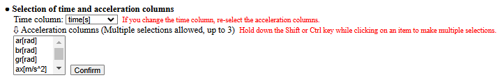
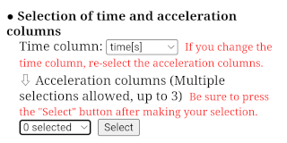
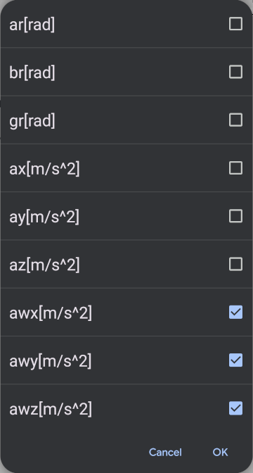

[ Operating guide ]
■ Select Time and Acceleration Columns
After loading a CSV file, select the time column and acceleration columns from the displayed table data. Initially, the leftmost column of the CSV data is selected as the time column, but if another column contains time data, select it from the dropdown menu. Once the time column is selected, the dropdown menu for the acceleration columns will display labels of the other data columns. Select the desired acceleration columns from this list and click the "Confirm" button. If you change the time column after selecting the acceleration columns, you will need to reselect the acceleration columns.

Up to three acceleration columns can be selected simultaneously. When using this app on a PC, multiple items can be selected by holding the Shift or Ctrl key while clicking the items.


When using this app on a mobile device such as a smartphone or tablet, pressing the selector (labeled "0 selected") will display a checklist of data items. You can check multiple acceleration columns (up to three) in this list. After returning by pressing "OK," make sure to press the "Confirm" button.
After selecting the time column and acceleration columns and clicking the "Confirm" button, a graph with time on the horizontal axis and acceleration on the vertical axis will be displayed, as shown below.

Proceed to Set the Time Domain for Analysis.